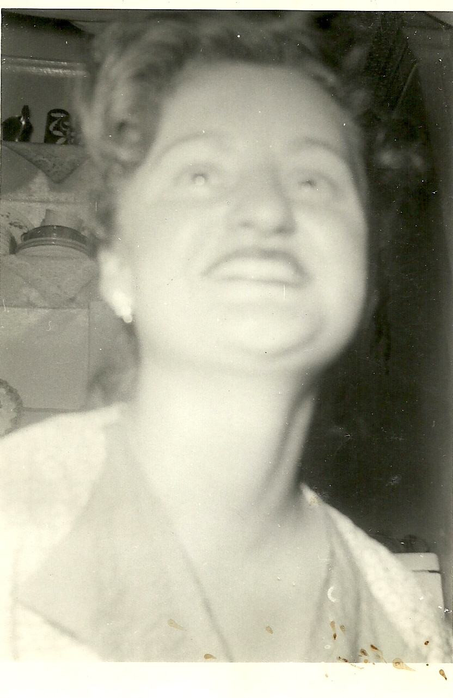
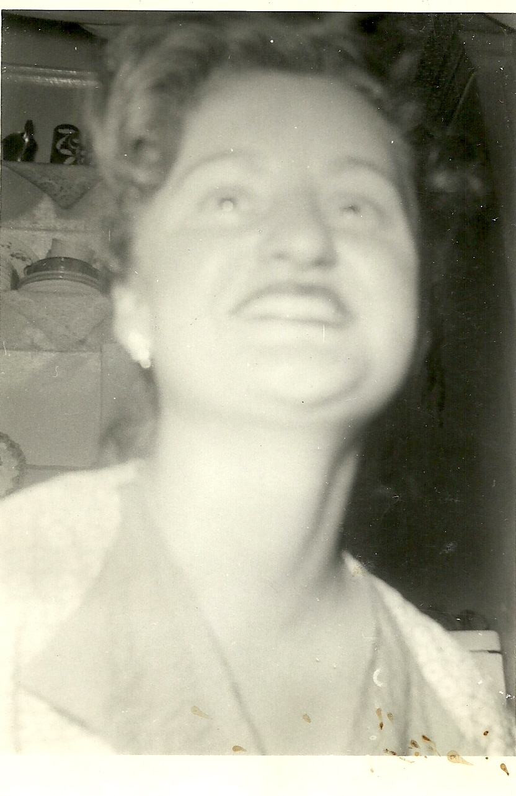
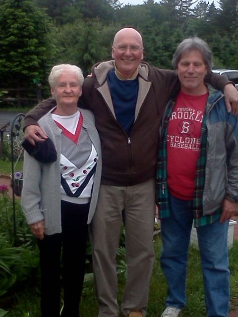
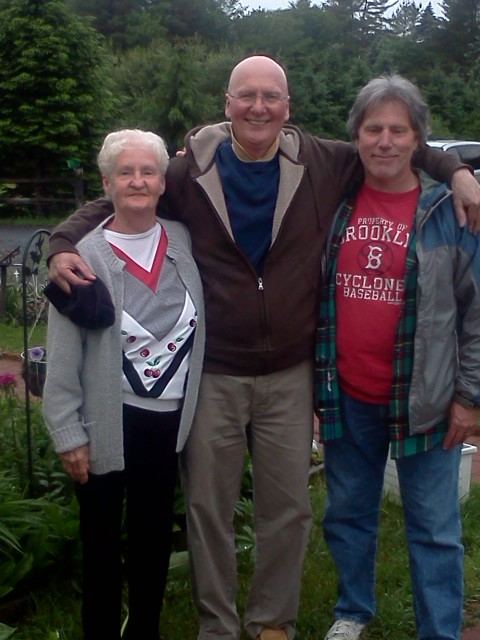

In Loving Memory of Edna Jane Keeley
In Loving Memory of Edna Jane Keeley
In Loving Memory of Edna Jane Keeley
In Loving Memory of Edna Jane Keeley

August 21 1934, Edna Jane Keeley was born to Bernard and Edna Keeley in The Bronx, NY and would become the first born of four siblings: Tom, Barney, Helene and Jim.


She was many things: bright, polite, inquisitive, tough, fun-loving, hard-working and happy.


 

In 1958, Edna married William Daly and gave birth to a son, Vincent.


Edna moved from her life in The Bronx to Laconia, NH in 1982 to be close to her son, Vin and his family.


She adjusted to her new way of life, walking to work every day and making new friends. That was her talent in life: making friends anywhere she went. She was a social butterfly. Never afraid to speak up, ask questions, include strangers around her in a discussion. Her lack of fear and her ingrained need to talk, connect to others and be with people was such a big part of her. Edna was resilient, adjusting to her circumstances yet being strong enough to set boundaries. She would laugh things off and move on. She wanted to work, but the time came for retirement.
 



One of the most important aspects of Edna's life was her church. She attended Christ Community Church and was as involved as possible. She loved being with the people there, she loved helping out with the volunteer room and helping to organize anything needed. Edna was always deeply religious and had a personal relationship with God.


If you knew Edna you knew her love for chocolate ice cream and reading. She had a bird named Tweety who was her companion for many years.


One thing is for sure: she loved us fully.